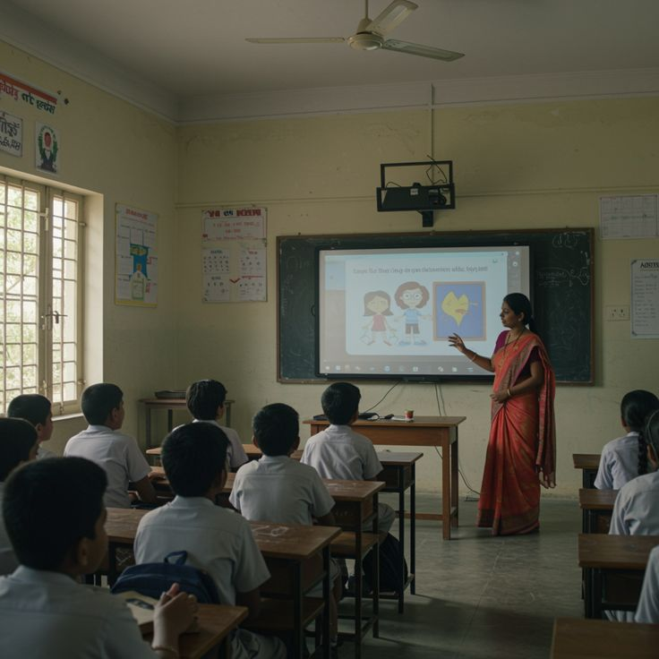
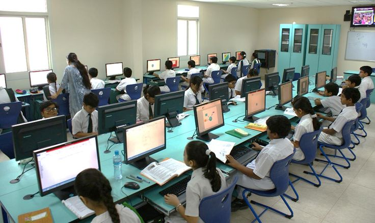

Transforming Lives Through Education
At Lit Kiran, we've developed a range of specialized programs to address different educational needs

Child Education Initiatives
85% Complete
2,500 Children
- Primary School Sponsorship
- After-School Learning Centers
- Scholarship Programs
- Digital Literacy Classes
School Development Programs
65% Complete
85 Schools
- Infrastructure Improvement
- Teacher Training
- Library Setup
- Computer Lab Setup

Community Engagement
45% Complete
35 Communities
- Parent Education Workshops
- Women's Literacy Programs
- Vocational Training
- Health Awareness Camps

Digital Education Program
30% Complete
15 Centers
- Tablet-Based Learning
- Coding Workshops
- Online Tutoring
- STEM Education
Program Comparison
| Program Feature | Child Education | School Development | Community Engagement | Digital Education |
|---|---|---|---|---|
| Primary Beneficiaries | Children (6-14 years) | Schools & Teachers | Families & Communities | Youth (10-18 years) |
| Duration | 3-5 years | 2-3 years | 1-2 years | 2-4 years |
| Current Reach | 2,500 children | 85 schools | 35 communities | 15 centers |
| Volunteer Opportunities |

Measuring Our Impact
Our programs have created tangible change in communities across India. Here's what we've achieved together:
5,000+
Children Educated
200+
Schools Supported
50,000+
Books Distributed
100+
Computer Labs Established
What People Say About Our Programs
Lit Kiran's after-school program transformed my daughter's education. She's now top of her class and dreams of becoming a doctor.
The teacher training program gave me new skills to engage students. My classroom is now more interactive and students are performing better.
Volunteering with Lit Kiran's digital literacy program has been incredibly rewarding. I'm helping bridge the digital divide in rural communities.
Ready to Make a Difference?
Join us in our mission to educate underprivileged children across India